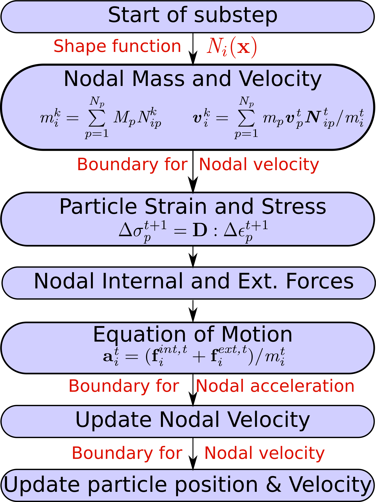
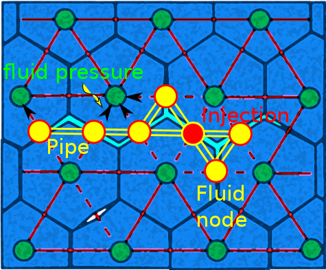

3D DEM Code support for different shapes - Done (University of Grenoble)
DEM simulations on GPU
Contact models for DEM
Special boundaries for DEM
Material Point Method
Porosity in MPM
Material Point Method - Algorithm

Granular Slope subjected to Impact
MPM Simulation
Slope subjected to 100J of Impact Energy
FEM / MPM implementation
Generic templatised C++11/14 code
2D/3D MPM Code
Generalise Interpolation Material Point
Shared memory / thread parallelisation
BLAS matrix algebra
Visualisation VTK
Material models:
Linear elastic
Mohr coulomb
Bingham fluid
Cam Clay
NorSand
Elements: Quadrilateral and Hexahedron
C++ Factory implementation
class MyElementFactory { // The factory - implements singleton pattern!
public:
static MyElementFactory* Instance(); // Get the single instance of the factory
void RegisterFactoryFunction(
std::string name, std::function classFactoryFunction);
// create an instance of a registered class
std::shared_ptr Create(std::string name);
};
template // A helper class to register a factory function
class Registrar {
public:
Registrar(std::string className) {
MyElementFactory::Instance()->RegisterFactoryFunction(
className, [](void) -> Element * { return new T(); });
}
};
C++ Factory implementation
void MyElementFactory::RegisterFactoryFunction(
std::string name, std::function classFactoryFunction) {
// register the class factory function
factoryFunctionRegistry[name] = classFactoryFunction;
}
std::shared_ptr MyElementFactory::Create(std::string name) {
Element* instance = nullptr;
// find name in the registry and call factory method.
auto it = factoryFunctionRegistry.find(name);
if (it != factoryFunctionRegistry.end()) instance = it->second();
// wrap instance in a shared ptr and return
if (instance != nullptr)
return std::shared_ptr(instance);
else
return nullptr;
}
FEM / MPM Current development
FE Base library
Mesh class
Solver class
Assembler class
MPI parallelisation
PETSc matrix algebra / solver
FE THM coupling
HDF5 support
NoSQL db to store / retireve results
GMSH meshing
JSON input
Two-phase and Two-point formulation
Lattice Element Method
Lattice Element Method - Fluid coupling

First assume injection pressure $P_{in}$ and injection rate $Q_{in}$ at injection point
Solve fluid pressure at each fluid node
Convert pressure to node force and solve LEM to update fracture aperture
Repeat the above process until convergence
$$q = - \frac{h^3}{12\mu}\frac{dp}{dx}$$
Lattice Element Method - Algorithm
Lattice Element Method
Dry fracture
Hydraulic fracturing
LEM implementation
GMSH mesh generation
Generic templatised C++11/14
MPI Parallelisation for large problems
PETSc for multi-node solver
MAGMA/cuBLAS for GPU solver
LEM:
Linear spring elements
Shear spring
Simple fluid model
Leak-off
DB resume support
Visulisation using VTK
LEM future developments
Modelling initial ground condition
Model major faults
Stratum from geological interpretation
Advanced lattice models
Fluid model:
Advanced fluid models
multi-stage and multi-well simulation
Re-meshing / upscaling techniquee for multi-scale modelling
Multi-node multi-GPU parallelisation for large problems